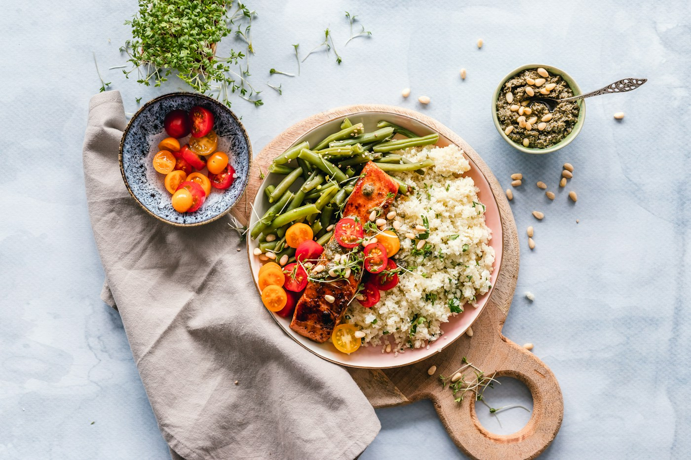

داستان رژیم من
یک فکر ساده:
غذای خوب، برای زندگی خودت.
رژیم من از این نگاه شروع میشود که برنامهٔ غذایی، وقتی به زندگی آدمها نزدیک باشد، قابل فهمتر و قابل پیگیریتر است.

چرا رژیم من؟
تکنولوژی، با یک
نگاه انسانی.
میان توصیههای پراکنده و روزهای شلوغ، انتخاب غذا میتواند به تصمیمی پیچیده تبدیل شود. ما در رژیم من، روی روشنتر کردن این مسیر تمرکز کردهایم: از چند سؤال دربارهٔ خودت، تا برنامهای که متخصص آن را بررسی کرده باشد.
هوش مصنوعی برای ما ابزاری برای آماده کردن پیشنهاد اولیه است. نگاه متخصص، امکان گفتگو و توجه به اطلاعات هر فرد، بخش اصلی تجربهای است که طراحی میکنیم.
ما به برنامهای فکر میکنیم که
جای زندگی کردن در آن باشد.
جای زندگی کردن در آن باشد.

اصلهایی که همراه ما هستند
شفاف، شخصی و همراه.
- کاربر بداند برنامهاش در چه مرحلهای است.
- تصمیم نهایی برنامه با بررسی متخصص باشد.
- پرسیدن سؤال و درخواست تغییر ساده باشد.
- اطلاعات و هدف هر فرد، نقطهٔ شروع باشد.
یک همراهی روشن
از شناخت تو تا برنامهٔ تو.
پرسشنامه، پیشنهاد هوشمند، بررسی متخصص و پیگیری روزانه؛ هر قدم در جای خودش.
از یک انتخاب خوب شروع کن.
یک برنامهٔ غذایی، متناسب با سلیقه و زندگی تو.